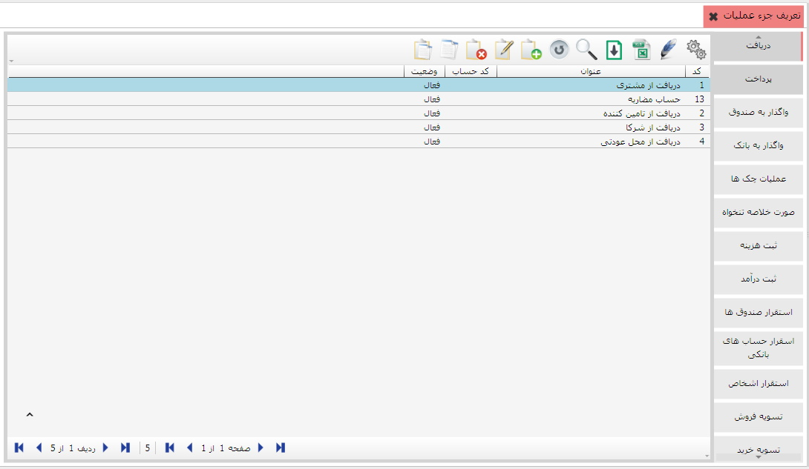
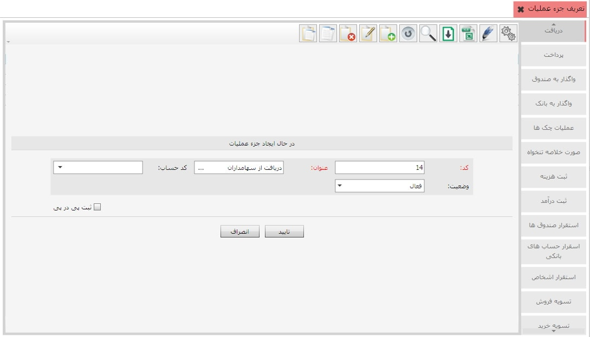

از این قسمت می توانید برای هر عملیاتی که تعریف کرده اید جزء عملیات متناسب با آن را تعریف کنید. با کلیک روی گزینه «تعریف جزء عملیات» صفحه مربوط به این قسمت باز می شود که آن را در شکل زیر مشاهده می کنید، در ادامه با نحوه تعریف جزء عملیات آشنا خواهید شد.
همان طور که در شکل بالا مشاهده می کنید در صفحه مربوط به تعریف جزء عملیات، لیست عملیات های تعریف شده در سمت راست صفحه قرار دارد با کلیک روی هر عملیات در جدول مقابل آن اجزاء تعریف شده برای آن عملیات نمایش داده می شود.(در شکل بالا عملیات «دریافت» انتخاب شده است و در جدول روبرو اجزاء تعریف شده برای آن از قبیل دریافت از مشتری، دریافت از تامین کننده و دریافت از شرکا ... قرار گرفته اند.) برای تعریف جزء عملیات جدید ابتدا عملیاتی را که می خواهید برای آن جزء تعریف کنید را انتخاب کرده، سپس از نوار ابزار موجود در جدول روبرو روی گزینه اضافه کلیک کنید تا فرم مربوط به ایجاد جزء عملیات به نمایش درآید.
در فرم بالا عنوان جزء عملیاتی که می خواهید ایجاد کنید را وارد کنید، سپس در قسمت کدحساب، حساب متناسب با عنوان وارد شده را انتخاب کرده و در آخر با کلیک روی تایید، جزء عملیات مورد نظر را ثبت نمایید. پس از تایید و ثبت، جزء عملیات ایجاد شده به لیست جزء عملیات های تعریف شده افزوده می شود.